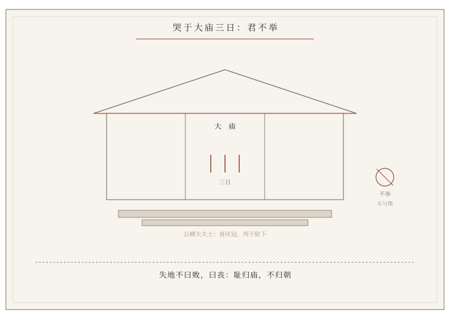

檀弓上 · 三·一百一十七 · 第 320 课
国亡大县邑，公、卿、大夫、士皆厌冠，哭于大庙三日，君不举。或曰，君举而哭于后土。
说什么事：军败失地，亡了大县邑，以丧事处之：公卿大夫士都戴丧冠，入大庙哭三日，君三日不举乐、不盛馔。另一说：君举馔而哭于社。
落在哪一层：以「三日」与「庙」量国耻。论「失地不叫败，叫丧」。
为何编在此位：三百一十六课论哭诸侯，此课论哭自己的失地。哭的对象由人转国，哭的地方由台转庙。
【经】國亡大縣邑，公、卿、大夫、士皆厭冠，哭於大廟三日，君不舉。
【注】軍敗失地，以喪歸也。厭冠，今喪冠，其服未聞。
【经】或曰，君舉而哭於后土。
【注】后土，社也。
【疏】此一节论人君为国致忧之事。「国亡大县邑」者，亡，失也；国之军败，亡失土邑也。「公卿大夫、士皆厌冠，哭于大庙三日」者，公，孤也；《士丧礼》云「公卿大夫继主人」，郑云「公，大国之孤四命者是也」；厌冠，丧冠也；国既失地，是诸侯无德所招，故诸臣皆著丧冠而哭于君之大庙三日也；失地为先祖所哀，故在庙也。「君不举」者，举谓举乐也；臣入庙三日哭，故君亦三日不举乐也。「或曰，君举而哭于后土」者，后土，社也；又有或者言亦举乐，而自于社中哭之，社主土故也；然二处之哭，郑皆不非，未知孰是。庾蔚云「举者谓举馔」，引《周礼·膳夫》「王日一举」，又「王齐日三举」，注云「杀牲盛馔曰举」；案庾蔚及前通合而为用也。
亡 失。
大县邑 大县与大邑。
厌冠 厌，音压。丧冠之一种。注「今丧冠，其服未闻」。
大庙 始祖之庙。
举 注一说举乐，一说举馔（杀牲盛馔）。
后土 注「后土，社也」。
社 土地之主。
国失了大的县邑，公卿大夫士都戴丧冠，入大庙哭三日，君三日不举。另一说：君照常盛馔，而亲自在社中哭。
失地之丧。经文把「军败失地」写成「国亡大县邑」，注四字点破：「军败失地，以丧归也。」
于是此事不按「败」办，按「丧」办：戴丧冠、入大庙、哭三日、君不举。
三个决定里，最见意思的是哭于大庙。失地是先祖所哀，故在庙——国耻归庙，不归朝。
第一层 「以丧归」：一字定全局 注四字「军败失地，以丧归也」。地把国与祖连在一起；失了地，是无面目见先人，故以丧处之。
这不是修辞。修辞只改说法，此处改的是「办的方式」：败要问责，丧要哀；问责在朝，哀在庙。
第二层 「厌冠」与注家的诚实 注「厌冠，今丧冠，其服未闻」。郑玄知道帽子是丧冠，衣服是什么样，老实说不知道。
这是注家的诚实：可据者据之，不可据者曰「未闻」。礼书之可信，一半在此。若处处强解，则全书皆不可信。
第三层 哭于庙，不哭于朝 疏「失地为先祖所哀，故在庙也」。庙是与祖相接之处，朝是与臣相接之处。国耻归庙，是把它交给祖，不交给同僚。
这个安排，把「耻」从「面子」移到「承继」。面子伤人，承继催人。
第四层 「举」的两解：乐与馔，兼取 郑未断「举」为乐抑为馔。庾蔚引《膳夫》「王日一举」「王齐日三举」，郑注「杀牲盛馔曰举」，以证为馔。疏说「合而为用」——既不举乐，也不盛馔。
这是疏的调和：二说并存而兼取。此种调和有其理：礼之「不举」，往往是整日减损，不止一事。
第五层 郑「皆不非」的分寸 「或曰哭于后土」，郑两存而不驳，疏说「二处之哭，郑皆不非，未知孰是」。
注家遇异说，有驳有不驳。驳者，以其害义；不驳者，以其可并存。此处不驳，是因为两说的根据都成立：庙主祖，社主土，失地与失土相关。
与今日何干 今人失地、失事、失人，多开会检讨、追责问责。此节给的形是：著丧冠、入祖庙、哭三日、君不举。其要义在「把它当作丧事办」——不是当作事故办。事故要有人负责，丧事要有人承担。负责是分，承担是受。
| 左 | 右 |
|---|---|
| 亡大县邑 | 军败失地 |
| 以丧归 | 不曰败 |
| 厌冠 | 丧冠，服未闻 |
| 哭于大庙 | 三日 |
| 君不举 | 乐与馔 |
| 或曰哭于后土 | 社 |
| 二说 | 郑不非 |
画一处宗庙，三间，中门之内一灯。阶下众臣列立，皆戴丧冠，衣素，列成一道横排，只画衣冠与背影。庙门之上横一道素帷。不画人面、不写文字。赭色只用在众臣冠上各一道细边。
